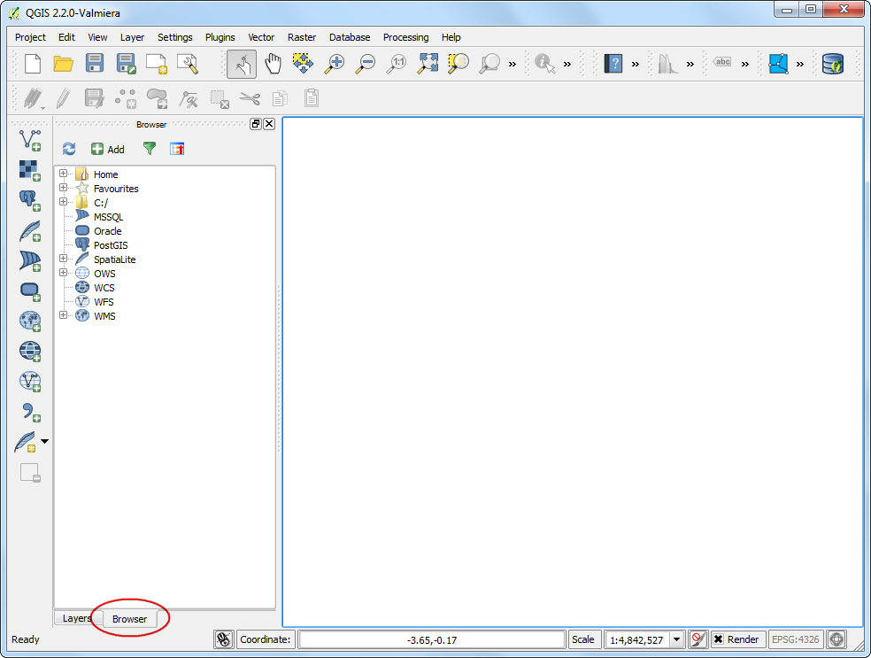

QGIS 탐색기 이용¶
QGIS는 QGIS 탐색기 **QGIS Browser**라는 독립 어플리케이션이 같이 구성되어 있습니다. 이것은 QGIS에 매우 유용한 동반 툴이고 GIS 데이터셋을 관리하는데 도움이 됩니다. ArcGIS 사용자들은 ArcCatalog와 유사한 어플리케이션으로 생각을 할 것입니다.
QGIS 탐색기 위치¶
QGIS 탐색기 독립 어플리케이션¶
QGIS 탐색기는 QGIS 표준 설치시 일부분입니다.
윈도스: OSGEO4W를 이용해서 QGIS를 설치한다면 시작 메뉴에서 QGIS 탐색기 ``QGIS Browser``를 보게될 것입니다.
맥: 이 어플리케이션은 ``QGIS.app/Contents/MacOS/bin/QGIS Browser.app``에 위치합니다. 이 어플리케이션의 symlink를 만들 수 있습니다. 어플리케이션 폴더를 찾아보십시오. QGIS 아이콘을 우측클릭하고 Show Package Contents`를 선택합니다. 메뉴 :menuselection:`MacOS –> bin –> QGIS Browser`에서 QGIS 탐색기 ``QGIS Browser``를 우측클릭하고 :guilabel:`Make Alias`를 선택합니다. ``QGIS Browser alias``를 끌어서 :guilabel:`Applications 폴더에 가져다 놓습니다. 이제 다른 어플리케이션처럼 QGIS 탐색기 ``QGIS Browser``에 접근할 수 있습니다.
리눅스:
qbrowser명령어로 QGIS 브라우저를 설치할 수 있습니다. QGIS 어플리케이션처럼 같은 디렉토리에 있습니다.

QGIS의 탐색기 판넬¶
QGIS 탐색기는 QGIS 데스크탑 어플리케이션 자체에서 접근하는 것이 편리합니다. 탐색기 판넬은 QGIS의 왼쪽 판넬 아랫쪽 위치해 있습니다. QGIS 탐색기 QGIS Browser`를 열기 위해서 탐색기 :guilabel:`Browser`탭을 누릅니다. 만약 탐색기 :guilabel:`Browser`탭을 볼 수 없다면, 메뉴 보기 –> 패널 –> 탐색기 :menuselection:`View –> Panels –> Browser (Windows와 Mac) 혹은 (리눅스)에서 보게할 수 있습니다.
과정¶
이제 QGIS 탐색기의 몇 객체를 탐색해 봅시다. 독립 QGIS 탐색기 어플리케이션으로 전환합니다. GIS 데이터가 있는 시스템상의 디렉토리를 탐색합니다. 그러면 곧 탐색기를 사용하는 것의 이점을 바로 알게 될 것입니다. 모든 지원파일과 비공간데이터 대신 QGIS가 지원하는 공간 레이어만 보게 됩니다. 선택을 위해서 레이어를 누릅니다.

레이어를 선택함에 따라 오른쪽 패널의 첫번째 탭에서 메타데이터를 보게될 것입니다. 이 패널에서 데이터셋에 대한 기초 정보 즉, 객체의 수, 투영 등을 빠르게 얻을 수 있습니다.

미리보기 탭으로 전환하면 데이터셋을 미리 볼 수 있을 것입니다. 이것은 QGIS를 열기전에 데이터셋을 어떻게 볼 것인지를 빠르게 결정할 수 있는 방법입니다.

마지막 탭은 속성 탭입니다. 여기서 필드활용에 대한 아이디어와 그 값을 얻기 위해 테이터셋의 속성테이블을 볼 수 있습니다.

QGIS 탐색기는 시스템상의 벡터와 이미지 레이어 뿐만 아니라 데이터셋과 네트워크 자원에 접근할 수 있게 해 줍니다. WMS를 경유하여 온라인 데이터를 사용하고자 한다면 탐색기 안에서 빠르게 미리보기를 할 수 있습니다. 단순히 WMS 위치를 확장하고 설치하고자 하는 자원을 볼 수 있을 것입니다. 마찬가지로 PostGIS, SpatialLite 혹은 MSSQL를 사용하고 싶다면 그것들에 접근할 수 있습니다.

QGIS 탐색기는 압축파일을 직접 탐색하고 열 수 있는 기능을 가지고 있습니다. 압축파일이 포함된 아무 폴더나 찾아가십시오. 압축파일 또한 지원 데이터셋처럼 나타나는 것을 알 수 있게되고 다른 데이터셋처럼 미리보기를 할 수 있습니다.

또다른 유용한 특징은 Favorites 처럼 시스템에서 어떤 폴더를 추가하는 것입니다. 어떤 폴더를 우측클릭하고 :guilabel:`Add as a favorite`를 선택합니다.
참고
QGIS의 탐색기 패널로부터 현재 작업용 선호목록에 폴더를 추가하십시오. 이 특징은 독립 어플리케이션에서는 작동하지 않습니다.

선호목록에 추가를 해 놓으면 탐색기의 Favorites 폴더에서 빠르게 접근할 수 있습니다.

일단 레이어를 선택했다면 더블클릭해서 QGIS 캔버스에 추가할 수 있습니다. QGIS 캔버스에 레이어를 끌어다 놓을 수도 있습니다.

추가된 레이어를 보기 위해서 QGIS의 왼쪽 패널의 아랫쪽으로부터 Layers 패널로 전환할 수 있습니다.

If you want to give feedback or share your experience with this tutorial, please comment below. (requires GitHub account)